ขั้นตอนการปรับเทียบมาตรวัดระยะทาง
(ODOMETE CALIBRATION)
การปรับเทียบค่าระยะทางโดยใช้ซอฟต์แวร์ ROMDAS ทำได้ตามขั้นตอนด้านล่างนี้
🛠️ ขั้นตอน:
- เปิดซอฟต์แวร์ ROMDAS
- ไปที่เมนู
Calibration>Odometer - คลิก "Run Odometer Calibration"
- ปฏิบัติตามคำแนะนำที่แสดงในหน้าต่างโปรแกรม
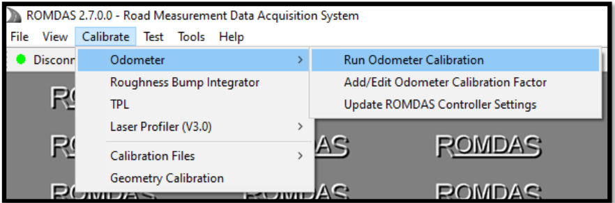
💡 หมายเหตุ
ควรทำการสอบเทียบบนถนนที่ตรง มีระยะทางแน่นอน และไม่มีสิ่งกีดขวาง
🛠️ หน้าต่างแสดงการตั้งค่า Odometer Calibration
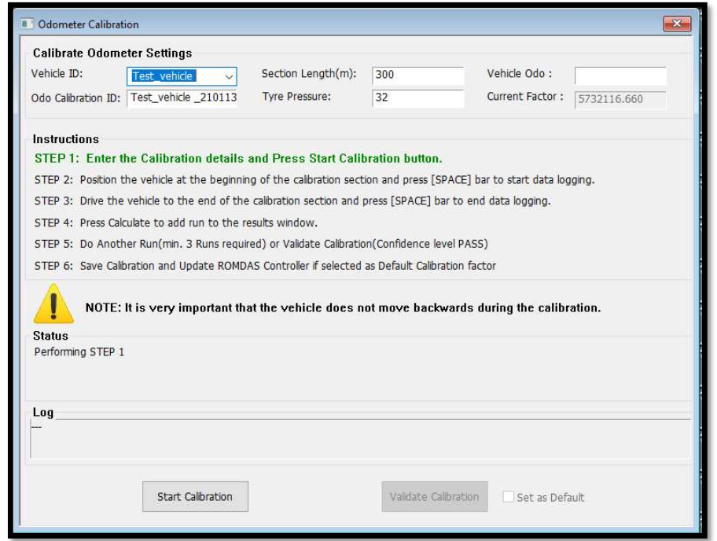
คำอธิบายรายละเอียดแต่ละช่องในโปรแกรม:
- รหัสรถ (Vehicle ID): ระบุชื่อหรือรหัสของรถที่ใช้ในการสอบเทียบ
-
รหัสการสอบเทียบ ODO (Odo Calibration ID): ระบบจะกำหนดอัตโนมัติโดยใช้ชื่อรถตามด้วยวันที่ เช่น
TestVehicle_201221(สามารถแก้ไขได้) -
ความยาวช่วง (Section Length): กรอกค่าความยาวถนนที่ใช้สอบเทียบ ไม่ควรต่ำกว่า 300 เมตร
- ความดันลมยาง (Tyre Pressure): ระบุค่าความดันลมยางของรถ
- เลขไมล์ปัจจุบันของรถ (Vehicle ODO): กรอกเลขไมล์ของรถในปัจจุบัน
- ค่าปัจจัยที่ใช้อยู่ (Current Factor): ค่าการสอบเทียบก่อนหน้า (ถ้ามี)
⚙️ ขั้นตอนที่ 1
- กรอกรายละเอียดในหัวข้อ “Calibration Odometer Settings”
และคลิก “เริ่มการสอบเทียบ (Start Calibration)”
จากนั้น เครื่องหมายสีเขียวจะเลื่อนไปจากขั้นตอนที่ 1 ไปยังขั้นตอนที่ 2
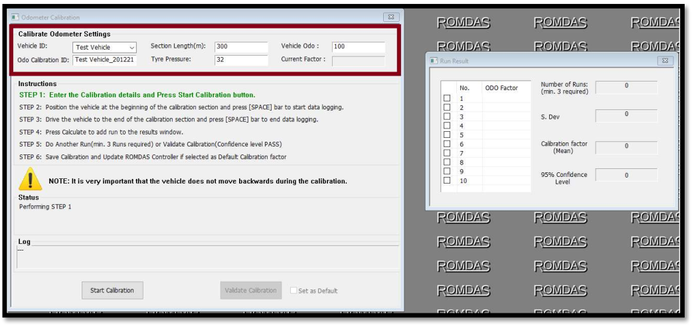
⚙️ ขั้นตอนที่ 2
- นำรถไปจอดที่จุดเริ่มต้นของช่วงที่ใช้สอบเทียบ แล้ว กดปุ่ม [SPACE] บนแป้นพิมพ์
หมายเหตุ : รถควรจอดอยู่ที่จุดเริ่มต้นของช่วงสอบเทียบ
📍 Site Odometer Calibration ที่แนะนำ: Google Maps – คลิกเพื่อเปิดแผนที่
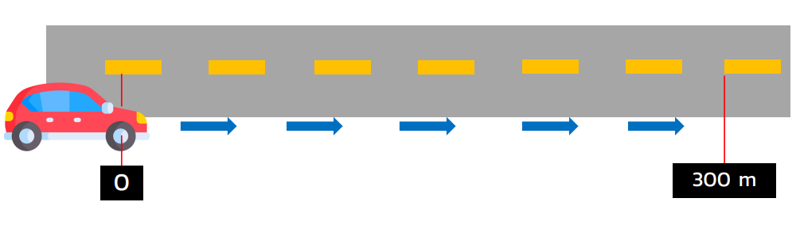
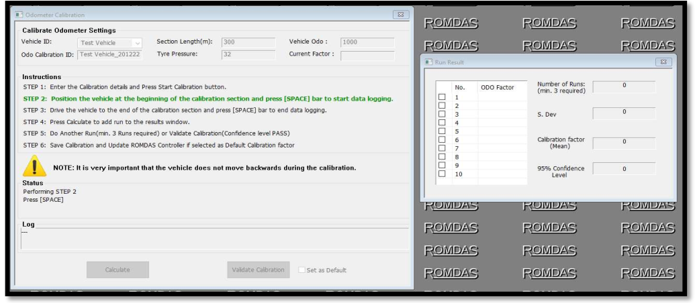
⚙️ ขั้นตอนที่ 3
- เมื่อกดปุ่ม [SPACE] ระบบจะเริ่มรับสัญญาณพัลส์จากตัวควบคุม ROMDAS
- เมื่อรถถึงจุดสิ้นสุดของช่วงสอบเทียบ ให้กด [SPACE] อีกครั้งเพื่อหยุดการบันทึกข้อมูล
- ✅ เครื่องหมายสีเขียวจะเลื่อนไปจากขั้นตอนที่ 3 ไปยังขั้นตอนที่ 4
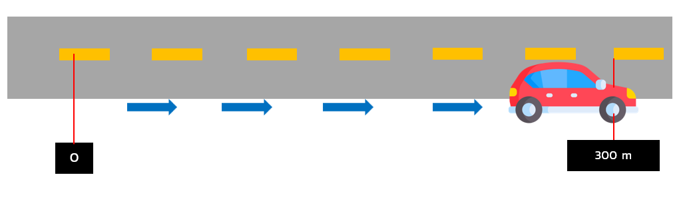
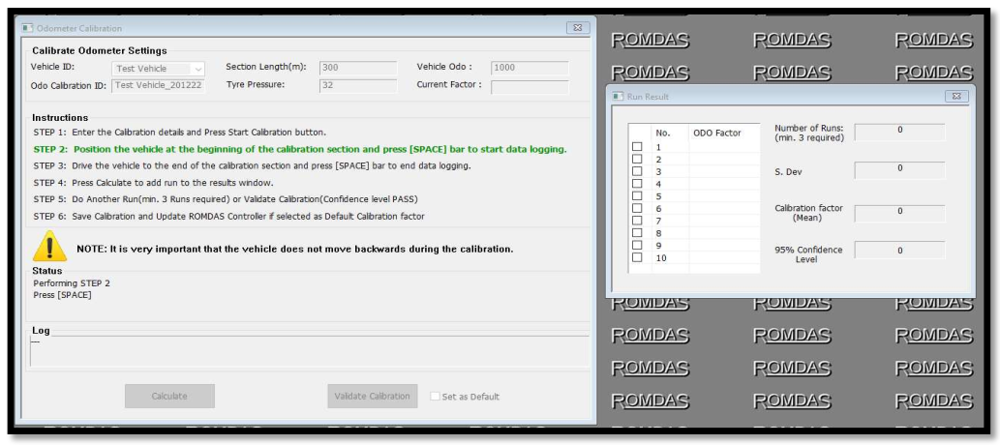
⚙️ ขั้นตอนที่ 4
- กดปุ่ม “Calculate” เพื่อคำนวณค่าปัจจัยการสอบเทียบ (Calibration Factor)
- ซึ่งระบบจะเพิ่มผลลัพธ์ที่ได้ลงในหน้าต่างผลการรัน (Run Result)
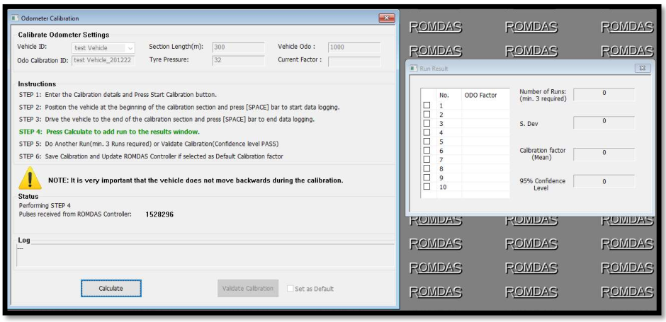
⚙️ ขั้นตอนที่ 5
- หลังจากการสอบเทียบครั้งแรกเสร็จ ให้คลิก “Do another Run”
- เครื่องหมายสีเขียวจะเลื่อนไปยังขั้นตอนที่ 2 จากนั้นให้รถกลับไปจุดเริ่มต้นของช่วงสอบเทียบ และทำซ้ำขั้นตอนเดิมอย่างน้อย 3 ครั้ง
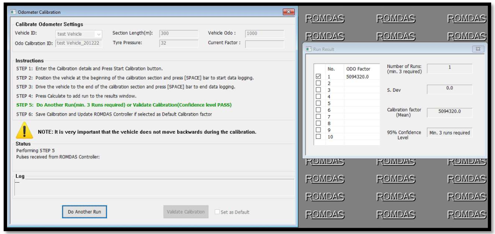
หมายเหตุ: ต้องทำการสอบเทียบอย่างน้อย 3 ครั้ง (3 runs) เพื่อให้ผ่านระดับความเชื่อมั่น (Confidence Level) สำหรับการสอบเทียบ ODO
⚙️ ขั้นตอนที่ 5-1
- การตรวจสอบความถูกต้องของค่าการสอบเทียบ (Calibration Factor Validation)
หากระดับความเชื่อมั่นของ ค่าการสอบเทียบแสดงว่า "ผ่าน (PASS)" ผู้ใช้งานสามารถเลือกที่จะทำการสอบเทียบเพิ่มเติมโดย
คลิก "Do Another Run" หรือคลิก "Validate Calibration" เพื่อยืนยันค่าการสอบเทียบ
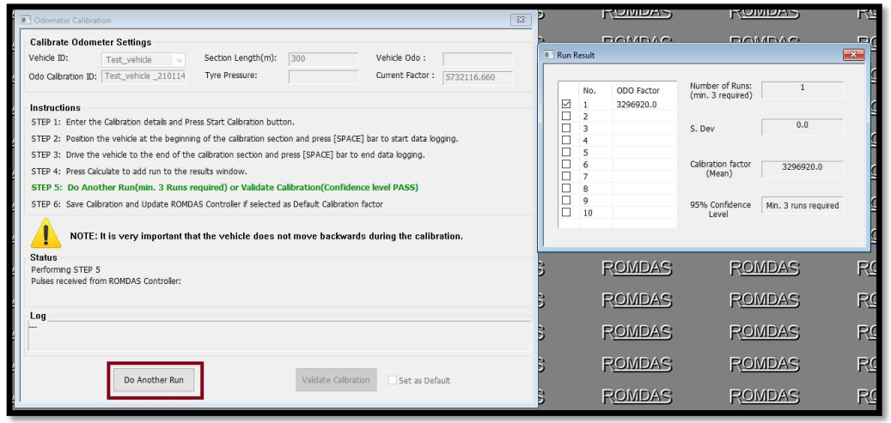
- การยืนยันค่าการสอบเทียบ (Validate Calibration) จะทำได้เฉพาะเมื่อระดับความเชื่อมั่นของค่าที่สอบเทียบเป็น “PASS” เท่านั้น
- ในการยืนยันค่าการสอบเทียบ ให้คลิก “Validate Calibration” แล้วนำรถไปจอดที่จุดเริ่มต้นของช่วงสอบเทียบ ตามขั้นตอนที่ 2 และกดปุ่ม [SPACE]
- ข้อมูลใน Status Log จะถูกอัปเดต โดยค่าระยะทาง (Chainage) จะแสดงการเพิ่มขึ้นตามลำดับ
- เมื่อรถถึงจุดสิ้นสุดของช่วงสอบเทียบ (300 เมตร) ให้กดปุ่ม [SPACE] อีกครั้งเพื่อหยุดการบันทึกข้อมูล
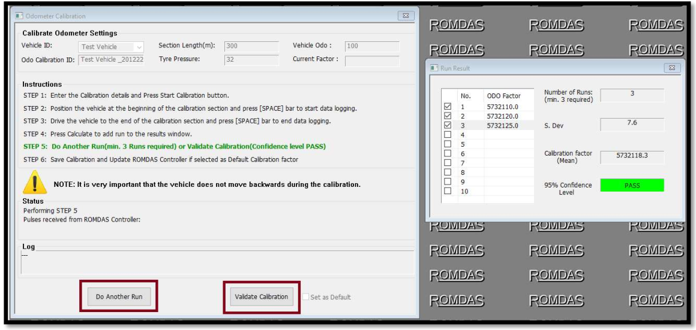
⚙️ ขั้นตอนที่ 6
- หากการทดสอบยืนยัน (Validation Run) ผ่าน ระบบจะแสดงข้อความใน Status Log ว่า “Validation Passed”
- จากนั้นจะมีปุ่มใหม่ปรากฏขึ้น คือ “Save Calibration” ให้ติ๊กเลือก “Set as default” และคลิก “Save Calibration”
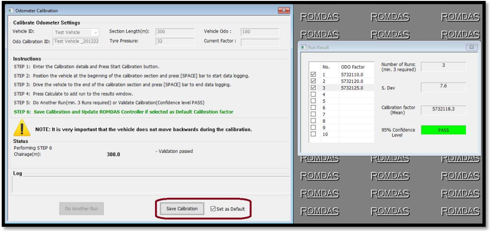
- ระบบจะแสดง log เพื่อยืนยันว่าค่าการสอบเทียบ ODO ได้ถูกอัปเดตเข้าสู่ ROMDAS controller แล้ว
จากนั้นสามารถออกจากกระบวนการสอบเทียบได้
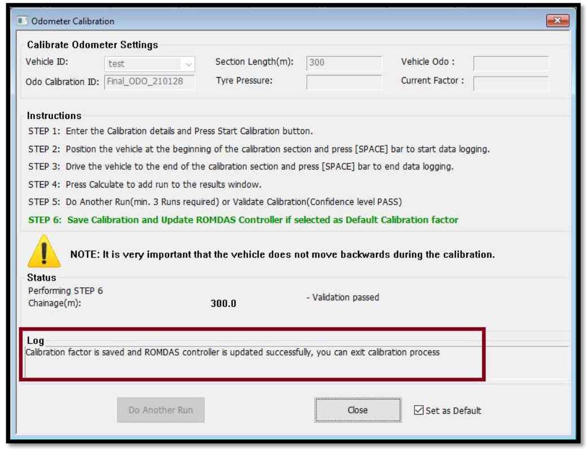
⚙️ ขั้นตอนที่ 7
- เมื่อคลิกปุ่ม “Save Calibration” ค่าปัจจัยการสอบเทียบจะถูกอัปเดตเข้าสู่ ROMDAS controller โดยอัตโนมัติ
- ✅ ผลการสอบเทียบจะถูกบันทึกลงในไฟล์ Excel โดยใช้ชื่อไฟล์ว่า
Odo Calib_Odo Calibration ID_Date (YYMMDD) - ซึ่งชื่อ Odo Calibration ID จะเป็นค่าที่กำหนดไว้ตั้งแต่เริ่มต้นกระบวนการสอบเทียบ ODO
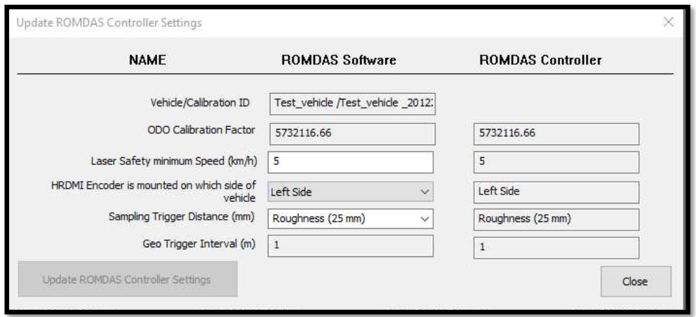
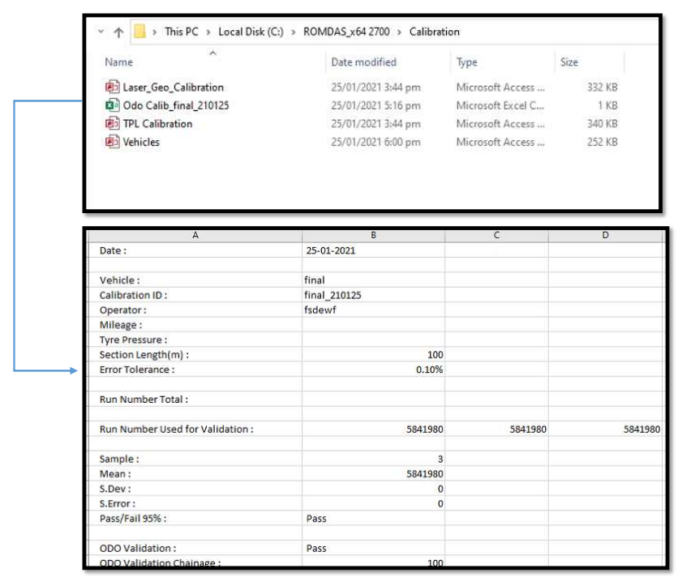